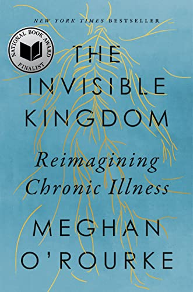
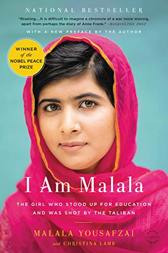

The Invisible Kingdom
$14.99
A landmark exploration of one of the most consequential and mysterious issues of our time: the rise of
chronic illness and autoimmune diseases.
More Details
Journalist and poet Meghan O’Rourke is the author of the No. 6 New York Times Bestseller THE INVISIBLE
KINGDOM: REIMAGINING CHRONIC ILLNESS.
Her work often tackles challenging subjects like grief, illness, and more. Her previous books include
the best-selling memoir THE LONG GOODBYE, and the acclaimed poetry collections SUN IN DAYS, ONCE, and
HALFLIFE.

I Am Malala
When the Taliban took control of the Swat Valley in Pakistan, one girl spoke out.
Malala Yousafzai refused to be silenced and fought for her right to an education.
More Details
Malala Yousafzai is a Pakistani activist for female education and the youngest-ever Nobel Prize
laureate.
She is known mainly for human rights advocacy for education and for women in her native Swat Valley in
the Khyber Pakhtunkhwa province of northwest Pakistan,
where the local Taliban had at times banned girls from attending school. Yousafzai's advocacy has since
grown into an international movement.

Hiroshima
$8.95
One of the great classics of the war" (The New Republic) that tells what happened in
Hiroshima through the memories of survivors—from a Pulitzer Prize-winning journalist.
More Details
John Richard Hersey (June 17, 1914 – March 24, 1993) was an American writer and journalist.
He is considered one of the earliest practitioners of the so-called New Journalism, in which
storytelling techniques of fiction are adapted to non-fiction reportage.

And There Was Light
$14.99
A president who governed a divided country has much to teach us in a twenty-first-century moment of polarization and political crisis.
Hated and hailed, excoriated and revered, Abraham Lincoln was at the pinnacle of American power when implacable secessionists gave no quarter in a clash of visions
bound up with money, race, identity, and faith. In him we can see the possibilities of the presidency as well as its limitations.
More Details
Jon Meacham is a Pulitzer Prize–winning biographer. The author of the New York Times bestsellers Thomas Jefferson: The Art of Power, American Lion:
Andrew Jackson in the White House, Franklin and Winston, and Destiny and Power: The American Odyssey of George Herbert Walker Bush, he is a distinguished visiting professor at Vanderbilt University, a contributing writer for The New York Times Book Review, and a fellow of the Society of American Historians.
Meacham lives in Nashville with his wife and children.